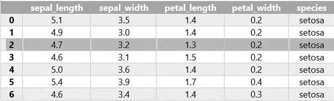

11. Pandas#
Önceki bölümde gördüğümüz Numpy paketi, veri saklama açısından oldukça hızlı ve etkin bir paket olmakla birlikte farklı türde verilerin bir arada kullanılması, verilerden seçim yapma gibi konularda yetersiz kalabilmektedir. Pandas paketi hem yüksek performanslı hem de esnek bir veri analizi ihtiyacından doğmuş ve Wes McKinney tarafından geliştirilmiştir. Pandas da esas olarak iki temel veri nesnesi bulunmaktadır: seriler (series) ve veri tabloları (dataframes).
11.1. Pandas Serileri#
Pandas serilerini sıra numalaraları olan (endekslenmiş) bir boyutlu diziler olarak düşünebiliriz. Pandas serisi aşağıdaki gibi tanımlanır. Nasıl ki Numpy paketini aktarırken geleneksel olarak np kısaltması kullanılıyorsa pandas paketi için de genel olarak pd kısaltması kullanılıyor.
import pandas as pd
pandas_seri = pd.Series( [5, 7, 3, 10, 8, 6] )
pandas_seri
0 5
1 7
2 3
3 10
4 8
5 6
dtype: int64
Varsayılan olaran Pandas serilerinin endeksi 0’dan başlayan ardışık tamsayılardır. Ancak dilersek farklı endeks isimleri de kullanabiliriz.
pandas_seri = pd.Series([5, 7, 3, 10, 8, 6],
index = ['a', 'b', 'c', 'd', 'e', 'f'])
pandas_seri
a 5
b 7
c 3
d 10
e 8
f 6
dtype: int64
Bu yönüyle serileri bir çeşit sözlük (dictionary) veri yapısı gibi de düşünebiliriz. Ancak sözlüklerde arka arkaya gelen verileri seçmek mümkün değilken serilerde bu mümkündür.
11.2. Pandas Data Frame#
Veri analizinde kullanılan verilerin formatı çok farklı olabilmektedir. Buna karşın günlük çalışmalarımızda kullandığımız veriler çoğu zaman satır ve sütunlardan oluşan tablolardan oluşmaktadır. Bu tür verileri iki boyutlu veriler olarak da isimlendirebiliriz. Bu nedenledir ki basit veri işlemlerinde en çok kullanılan program MS Excel veya benzeri programlardır. Bu tür programlar ile satır ve sütunlarda gösterilebilecek verileri rahatlıkla saklamak ve bunlar üzerinde çeşitli analizler ve hesaplamalar yapmak mümkündür. Bu tür programların kullanım kolaylığı da yaygın olarak kullanılmalarında bir başka etkendir. Örneğin, R programlama dilinin yaygınlaşmasının en önemli sebeplerinden birisi de farklı veri tipindeki sütunlardan oluşan verilerle analiz, modelleme gibi işlemleri kolaylaştırmasıdır.
Diğer yandan kullanılan veri kümelerinin büyüklüğü arttıkça bu tür programlarda veri işleme ve analiz çok zor ve yavaş bir hale gelmektedir. Bilgisayar donanım teknolojinin önceki yıllara nazaran çok daha gelişmiş olduğu günümüzde dahi birçok bilgisayar birkaç yüz bin satırlık bir dosya bile hele bir de formüller içeriyorsa bilgisayarı zorlayabilmekte ve çalışmaları oldukça yavaşlatabilmektedir. Aşağıda görülen veri seti yapay öğrenme konusunda çok sık kullanılan iris veri kümesinin bir bölümünü göstermektedir. Bu veri kümesinde 150 iris çiçeğine ait (tabloda bir kısmı gösterilmiştir) çanak (sepal) ve taç (petal) yapraklarının en ve boy ölçümleri yapılmış ve üç farklı tür için bu ölçümler kaydedilmiştir.

Tablo şeklindeki bir başka deyişle iki boyutlu veri kümelerinde her satır bir gözlemi ya da bir ölçümü belirtmektedir. Her sütun ise bu gözlemlere ilişkin farklı özellikleri yani değişkenleri belirtmektedir. Örneğin, yukarıdaki tabloda her satır bir çiçek için yapılan ölçümü ifade etmektedir. Sütunlarda ise her bir ölçüme ait farklı özellikler (çanak yaprak en ve boyu ile taç yaprak en ve boyu) ve çiçek türü (setosa, versicolor, virginica) yer almaktadır.
Neyse ki Matlab, R gibi diller gibi Python’da da iki (ve daha fazla) boyutlu veri kümeleri için kullanılabilecek paketler mevcuttur. Bunlar arasında yer alan numpy paketini daha önce görmüştük. Numpy paketinin bir eksikliği, numpy dizilerinin sadece aynı türde verilerden oluşabilmesidir. Ancak, gerçek hayatta kullandığımız birçok veri kümesi farklı sütunlarda farklı veri türleri içerebilmektedir. Örneğin, yukarıdaki tabloda ilk dört sütundaki veriler sayısal, son sütundaki veri tipi ise metin türündedir.
Pandas paketinde yukarıdaki gibi iki boyutlu veri kümeleri data frame (veri çerçevesi) olarak isimlendirilir (bundan sonra data frame terimi kullanılacaktır). Veri çerçeveleri, Python’da veri analizini son derece kolaylaştıran çok kullanışlı veri yapılarıdır. R programlama dilini bilenler için Pandas data frame, R’daki data frame ile aynıdır. Data frame yukarıda anlattığımız iki boyutlu veri kümesi özelliklerini taşır. Her satırda bir gözlem, her sütunda da farklı bir değişken yer alır. Bir sütunda yer alan tüm veriler aynı tiptedir ama farklı sütunlarda farklı veri türleri yer alabilir. Data frameler, veri bilimi açısından çok faydalı veri yapılarıdır. Bunları kullanarak betimsel ve çıkarımsal veri analizi yapmak, istatistiksel modeller kurmak, verileri görselleştirmek daha kolaydır. Bunlardan olayı veri biliminde Python kullananlar için Pandas modülünden faydalanmak neredeyse standart hale gelmiştir.
Bir pandas data frame oluşturmak için farklı yöntemler vardır. Bunlardan bir tanesi sözlük veri yapısını kullanmaktır. Şimdi yukarıda yer alan tabloyu oluşturmak için önce bu verileri bir sözlük olarak tanımlayalım.
iris_dict = {
'Sepal_Length':[5.1, 4.9, 4.7, 4.6, 5.0, 6.7, 6.3, 6.5, 6.2, 5.9],
'Sepal_Width' :[3.5, 3.0, 3.2, 3.1, 3.6, 3.0, 2.5, 3.0, 3.4, 3.0],
'Petal_Length':[1.4, 1.4, 1.3, 1.5, 1.4, 5.2, 5.0, 5.2, 5.4, 5.1],
'Petal_Width' :[0.2, 0.2, 0.2, 0.2, 0.2, 2.3, 1.9, 2.0, 2.3, 1.8],
'Species' :['setosa', 'setosa', 'setosa', 'setosa', 'setosa',
'virginica', 'virginica', 'virginica','virginica',
'virginica']
}
iris_dict
{'Sepal_Length': [5.1, 4.9, 4.7, 4.6, 5.0, 6.7, 6.3, 6.5, 6.2, 5.9],
'Sepal_Width': [3.5, 3.0, 3.2, 3.1, 3.6, 3.0, 2.5, 3.0, 3.4, 3.0],
'Petal_Length': [1.4, 1.4, 1.3, 1.5, 1.4, 5.2, 5.0, 5.2, 5.4, 5.1],
'Petal_Width': [0.2, 0.2, 0.2, 0.2, 0.2, 2.3, 1.9, 2.0, 2.3, 1.8],
'Species': ['setosa',
'setosa',
'setosa',
'setosa',
'setosa',
'virginica',
'virginica',
'virginica',
'virginica',
'virginica']}
Sonrasında da pandas paketini import komutu ile içeri aktarıyoruz.
import pandas as pd
Son olarak yukarıda tanımladığımız sözlüğü pandas DataFrame veri tipine dönüştürmek için .DataFrame() metodunu kullanıyoruz. Oluşturulan dataframe’in satırları sıfırdan başlamak üzere numaralandırılır.
iris = pd.DataFrame(iris_dict)
print(iris)
Sepal_Length Sepal_Width Petal_Length Petal_Width Species
0 5.1 3.5 1.4 0.2 setosa
1 4.9 3.0 1.4 0.2 setosa
2 4.7 3.2 1.3 0.2 setosa
3 4.6 3.1 1.5 0.2 setosa
4 5.0 3.6 1.4 0.2 setosa
5 6.7 3.0 5.2 2.3 virginica
6 6.3 2.5 5.0 1.9 virginica
7 6.5 3.0 5.2 2.0 virginica
8 6.2 3.4 5.4 2.3 virginica
9 5.9 3.0 5.1 1.8 virginica
Şimdi biraz daha uzun bir yöntem görelim. Bu yöntemi pek kullanmayacak olsak da farklı veri yapılarını tekrar etmek için iyi bir fırsat. Bu yöntemde dataframe sütunlarını önce listeler olarak tanımlıyoruz. Daha sonra sütun isimleri ve sütunları zip fonksiyonunu kullanarak tuple verilerden oluşan bir listeye çeviriyoruz. Burada zipledikten sonra tekrar list fonksiyonunu kullandığımıza dikkat edin. Sonraki aşamada zip veri yapısını sözlüğe ve en son olarak da sözlüğü Pandas data frame’e çeviriyoruz.
# Önce sütunları liste olarak tanımlayalım.
Sepal_Length = [5.1, 4.9, 4.7, 4.6, 5.0, 6.7, 6.3, 6.5, 6.2, 5.9]
Sepal_Width = [3.5, 3.0, 3.2, 3.1, 3.6, 3.0, 2.5, 3.0, 3.4, 3.0]
Petal_Length = [1.4, 1.4, 1.3, 1.5, 1.4, 5.2, 5.0, 5.2, 5.4, 5.1]
Petal_Width = [0.2, 0.2, 0.2, 0.2, 0.2, 2.3, 1.9, 2.0, 2.3, 1.8]
Species = ['setosa', 'setosa', 'setosa', 'setosa', 'setosa', 'virginica',
'virginica', 'virginica', 'virginica', 'virginica']
sutun_isimleri = ['Sepal_Length', 'Sepal_Width', 'Petal_Length', 'Petal_Width', 'Species']
sutunlar = [Sepal_Length, Sepal_Width, Petal_Length, Petal_Width]
# Sütun isimleri ve sütunları zip fonksiyonu ile bir araya getirelim.
zip_veri = list(zip(sutun_isimleri, sutunlar))
print(zip_veri)
[('Sepal_Length', [5.1, 4.9, 4.7, 4.6, 5.0, 6.7, 6.3, 6.5, 6.2, 5.9]), ('Sepal_Width', [3.5, 3.0, 3.2, 3.1, 3.6, 3.0, 2.5, 3.0, 3.4, 3.0]), ('Petal_Length', [1.4, 1.4, 1.3, 1.5, 1.4, 5.2, 5.0, 5.2, 5.4, 5.1]), ('Petal_Width', [0.2, 0.2, 0.2, 0.2, 0.2, 2.3, 1.9, 2.0, 2.3, 1.8])]
# Ziplenmiş veriyi sözlük veri yapısına çevirelim
veri = dict(zip_veri)
print(veri)
{'Sepal_Length': [5.1, 4.9, 4.7, 4.6, 5.0, 6.7, 6.3, 6.5, 6.2, 5.9], 'Sepal_Width': [3.5, 3.0, 3.2, 3.1, 3.6, 3.0, 2.5, 3.0, 3.4, 3.0], 'Petal_Length': [1.4, 1.4, 1.3, 1.5, 1.4, 5.2, 5.0, 5.2, 5.4, 5.1], 'Petal_Width': [0.2, 0.2, 0.2, 0.2, 0.2, 2.3, 1.9, 2.0, 2.3, 1.8]}
# Son olarak sözlüğü Veri Çerçevesine çevirelim.
iris = pd.DataFrame(veri)
print(iris)
Sepal_Length Sepal_Width Petal_Length Petal_Width
0 5.1 3.5 1.4 0.2
1 4.9 3.0 1.4 0.2
2 4.7 3.2 1.3 0.2
3 4.6 3.1 1.5 0.2
4 5.0 3.6 1.4 0.2
5 6.7 3.0 5.2 2.3
6 6.3 2.5 5.0 1.9
7 6.5 3.0 5.2 2.0
8 6.2 3.4 5.4 2.3
9 5.9 3.0 5.1 1.8
Varolan bir veri çerçevesine yeni bir sütun eklemek de mümkündür.
iris['Gözlem_No'] = 1
print(iris)
Sepal_Length Sepal_Width Petal_Length Petal_Width Gözlem_No
0 5.1 3.5 1.4 0.2 1
1 4.9 3.0 1.4 0.2 1
2 4.7 3.2 1.3 0.2 1
3 4.6 3.1 1.5 0.2 1
4 5.0 3.6 1.4 0.2 1
5 6.7 3.0 5.2 2.3 1
6 6.3 2.5 5.0 1.9 1
7 6.5 3.0 5.2 2.0 1
8 6.2 3.4 5.4 2.3 1
9 5.9 3.0 5.1 1.8 1
Yukarıda aktardığımız, sözlükten data frame üretme yöntemi günlük hayatta kullanılabilecek bir yöntem değildir. Gerçekte çok büyük verilerle çalıştığımızı düşünürsek tek tek bütün verilerin sözlük olarak girilmesi mümkün değildir.